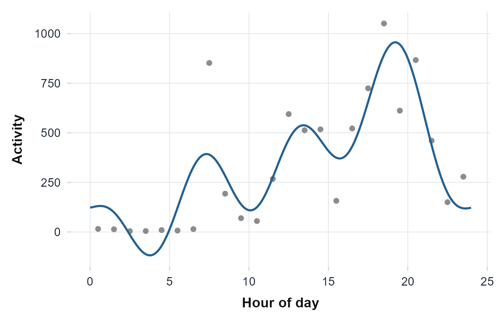
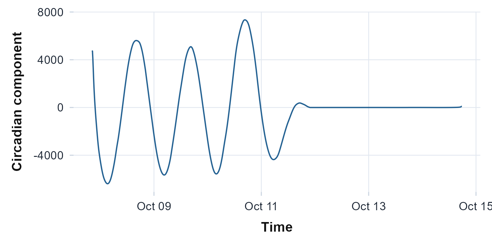
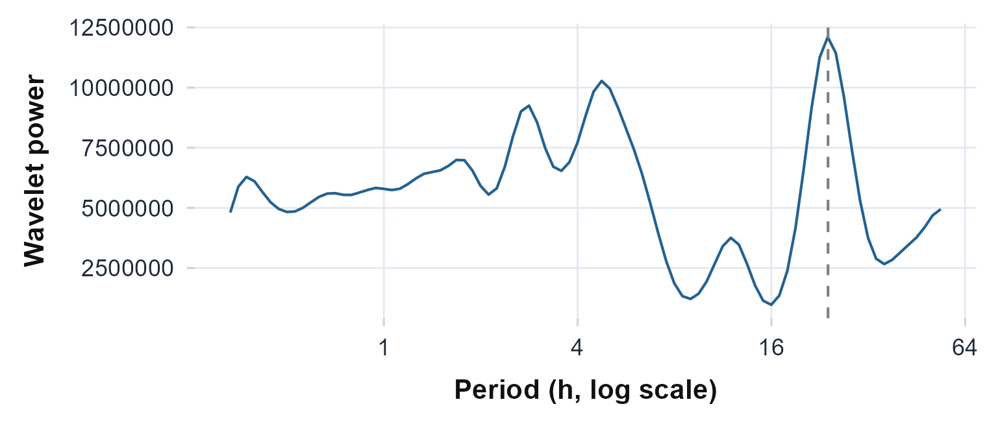
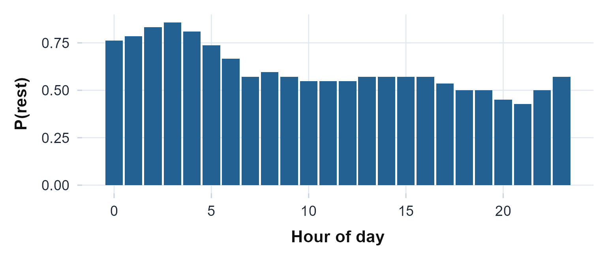

Beyond the basics: profile, decomposition, and finer metrics
Source:vignettes/articles/beyond-the-basics.Rmd
beyond-the-basics.RmdThis article continues from the get-started vignette, picking up the same bundled recording and going past the core workflow. It covers a fuller functional profile of the day and a singular-spectrum decomposition of the whole series, then a wider set of methods: finer nonparametric metrics, the shape and phase of the day, time-frequency and adaptive decomposition, and registration, residual structure, and states. Every object below is rebuilt from the installed package so the article stands on its own.
agd <- agd.counts(read.agd(example_agd(1), verbose = FALSE))
bin <- as.integer(as.numeric(agd$timestamp) %/% 600) # 10-minute bins
counts10 <- as.numeric(tapply(agd$axis1, bin, sum))
t10 <- as.POSIXct(as.numeric(names(tapply(agd$axis1, bin, sum))) * 600,
origin = "1970-01-01", tz = "UTC")
state <- sleep.cole.kripke(agd$axis1)A fuller profile, and a decomposition
The cosinor fits one cosine to the day. circadian.flm()
fits a functional model of the same 24-hour profile with several Fourier
harmonics, so it follows the real, asymmetric shape of the day instead
of forcing a symmetric curve (Wang et al., 2011); the single cosine
is its one-harmonic special case.
flm <- circadian.flm(agd$axis1, agd$timestamp)
flm
#> Functional Linear Model (24-hour activity profile)
#>
#> Basis: fourier (order 4, 9 terms)
#> Period: 24 hours
#> Days / profile points: 8 / 24
#>
#> Model fit:
#> R-squared: 0.7352
#> AIC: 406.84
#> F-statistic: 5.21 (p = 0.003)
#>
#> Dominant harmonic: H1, amplitude 303.40, acrophase 16.99 h
#>
#> Peak 956.3 at 19.2 h; trough -117.7 at 3.8 h
#>
#> Reference: Wang et al. (2011)
ggplot(flm$smooth_curve, aes(t, activity)) +
geom_point(data = flm$fitted_profile, aes(t, observed), colour = "grey55") +
geom_line(colour = "#236192", linewidth = 1) +
labs(x = "Hour of day", y = "Activity") +
theme_actiRhythm()
The functional fit (line) over the averaged hourly profile (points). The extra Fourier harmonics let the curve follow the asymmetric morning rise and evening decline that a single cosine smooths over.
The extra harmonics buy back the variance the single cosine left on the table, and the curve now bends through the morning rise the one cosine ran straight past.
circadian.ssa() takes the opposite view. Instead of an
average day it decomposes the whole recording with singular spectrum
analysis into additive components: a slow trend, a circadian pair, and
noise (Golyandina
& Zhigljavsky, 2013). The trajectory matrix grows with
the series, so bin a long minute recording to a coarser epoch first.
bin <- as.integer(as.numeric(agd$timestamp) %/% 600) # 10-minute bins
counts10 <- tapply(agd$axis1, bin, sum)
t10 <- as.POSIXct(as.numeric(names(counts10)) * 600, origin = "1970-01-01", tz = "UTC")
ssa <- circadian.ssa(as.numeric(counts10), t10)
ssa
#> Singular Spectrum Analysis (Basic SSA)
#>
#> Window length L: 144 epochs (24.0 h)
#> Series length n: 993 (K = 850, span 6.9 days)
#> Components kept: 10 of rank 144
#>
#> Variance explained (leading components):
#> ET1 lambda = 0.2929 (cumulative 0.2929)
#> ET2 lambda = 0.0814 (cumulative 0.3743)
#> ET3 lambda = 0.0578 (cumulative 0.4321)
#> ET4 lambda = 0.0295 (cumulative 0.4616)
#> ET5 lambda = 0.0293 (cumulative 0.4909)
#>
#> Grouping:
#> Trend: components 1
#> Circadian: components 2, 3 (13.9% of variance)
#> Fundamental period: 24.49 h
#>
#> Reference: Golyandina and Zhigljavsky (2013)
ggplot(data.frame(time = t10, circadian = ssa$circadian), aes(time, circadian)) +
geom_line(colour = "#236192") +
labs(x = "Time", y = "Circadian component") +
theme_actiRhythm()
The circadian component singular spectrum analysis pulls out of the whole recording: the daily rhythm separated from the slow trend and the noise.
For this recording the circadian pair carries about 14 percent of the variance with a fundamental period near 24.5 hours, the same slightly-long period the periodogram found earlier, now isolated as a clean component of the raw series.
A wider set of methods
The core above answers most questions. actiRhythm also carries a wider set of circadian methods for finer or more specialized work, shown here on the same recording.
Finer nonparametric metrics
intradaily.variability.multiscale() averages intradaily
variability across bin sizes, activity.extrema()
generalizes L5 and M10 to any window with onset and midpoint times,
dichotomy.index() measures how cleanly rest separates from
the active day (Mormont et al., 2000), and
circadian.daily() reports each day on its own so
within-recording drift shows. rest.activity.fragmentation()
adds the rest and active bout-length view that complements the kRA/kAR
rates above.
daily <- circadian.daily(agd$axis1, agd$timestamp)
dichotomy.index(agd$axis1, agd$timestamp, rest = state == "S")
#> Dichotomy Index (I<O)
#>
#> I<O: 100.0%
#> Active median: 652.0 counts
#> Rest / active epochs: 7646 / 2273
ggplot(daily$daily, aes(date, M10_onset_h)) +
geom_line(colour = "grey60") + geom_point(colour = "#236192", size = 2) +
labs(x = NULL, y = "M10 onset (h)") +
theme_actiRhythm()
The M10 onset (the start of the most active ten hours) for each day. Reporting it per day, rather than pooled, shows how steady the active phase is across the recording.
The shape and phase of the day
cosinor.multicomponent() adds harmonics to the single
cosine and picks how many by information criterion,
activity.onset.offset() marks the daily activity onset and
offset by the relative-difference method (Roenneberg et al., 2003), and
phase.concentration() tests whether the daily phase markers
cluster (Rayleigh and Hermans-Rasson).
cosinor.multicomponent(agd$axis1, agd$timestamp)
#> Multicomponent Cosinor
#>
#> Selected harmonics: 3 (by AIC) MESOR: 330.1 R-squared: 0.640
#>
#> harmonic amplitude acrophase_h
#> 1 294.33 20.56
#> 2 173.67 11.03
#> 3 42.81 0.14
phase.concentration(daily$daily$M10_onset_h)
#> Phase Concentration Tests
#>
#> n days: 7
#> Mean direction: 13.86 h R: 0.679
#> Rayleigh: Z = 3.23, p = 0.0332
#> Hermans-Rasson: T = 110.5, p = 0.0175Time-frequency and adaptive decomposition
On the ten-minute series from earlier,
circadian.wavelet() gives the time-frequency power
spectrum, ultradian.bandpower() splits the variance into
ultradian bands, and circadian.emd() with
hilbert.huang() extracts the circadian component
data-adaptively and tracks its instantaneous period.
wav <- circadian.wavelet(as.numeric(counts10), t10, epoch_length = 600)
ggplot(data.frame(period = wav$period_hours, power = wav$global_power),
aes(period, power)) +
geom_line(colour = "#236192") +
geom_vline(xintercept = 24, linetype = 2, colour = "grey50") +
scale_x_continuous(trans = "log2") +
labs(x = "Period (h, log scale)", y = "Wavelet power") +
theme_actiRhythm()
The global wavelet power spectrum. The peak sits at the circadian period (dashed line at 24 hours), recovered without assuming a fixed cosine shape.
emd <- circadian.emd(as.numeric(counts10), t10, epoch_length = 600)
hilbert.huang(emd)
#> Hilbert-Huang Instantaneous Dynamics
#>
#> No circadian IMF to analyseRegistration, residual structure, and states
curve.registration() aligns the days on their
active-phase landmark and reports a scale-invariant chronotype phase,
residual.spectrum() examines what the cosinor leaves
behind, and rest.hmm() fits a state-space model whose
decoded path gives the probability of rest across the day.
hmm <- rest.hmm(as.numeric(counts10), t10)
ggplot(hmm$tod_profile, aes(hour, p_rest)) +
geom_col(fill = "#236192") +
labs(x = "Hour of day", y = "P(rest)") +
theme_actiRhythm()
The 24-hour rest-probability profile from the state-space model: the share of each clock hour the decoded path spends in the rest state.